Kindle-style preview of the EPUB. Scroll through each section below.
Cover
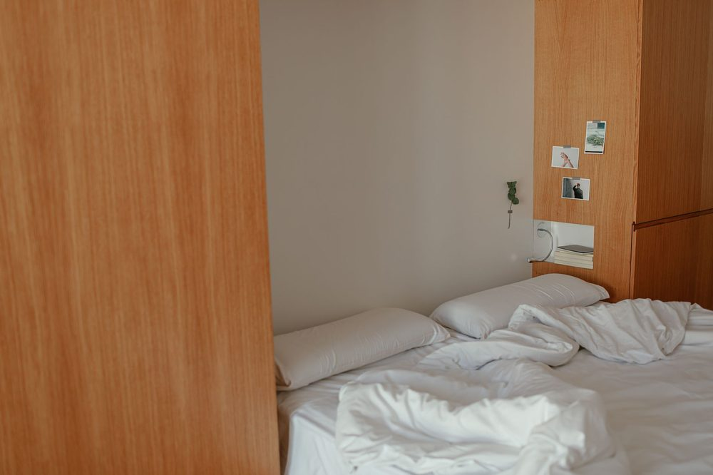
Chapter opener
Chapter
Foundations And Ground Rules
This blueprint is for students living in shared dorm rooms, residence halls, hostels, PGs, and small shared bedrooms who want more privacy, better light control, less disruptive noise, and a calmer sleep zone without permanent modifications. City names such as Pune or Bengaluru are illustrations. The room is a dorm-style shared bedroom, not a 1BHK apartment tour. Dorm life can feel like a tug of war. You can still build a sanctuary in the room you have, with the rules you have, in one focused week.
Day 1 · Who this is for, and the housing rules
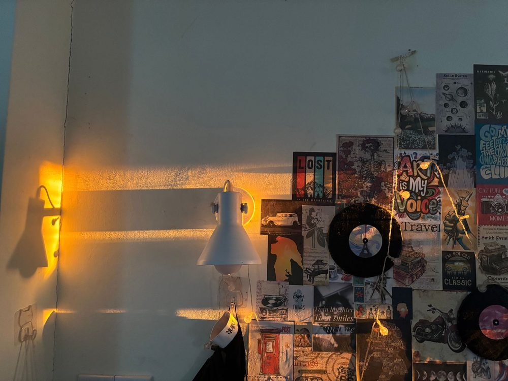
Day 1
Who this is for, and the housing rules
In this apartment
Ravi, a first-year in a Pune residence hall, highlights the handbook: no drilling, sprinkler clearance as the hall states, exits stay open.
Translate residence policies into practical options for your space.
Today's output: housing type named (residence hall, hostel, PG, or other small shared bedroom) plus a highlighted rule list. This guide works for all of those. Apartment examples in older drafts were the same small shared bedroom problem — use 'room,' 'shared room,' and 'hall' as the default words.
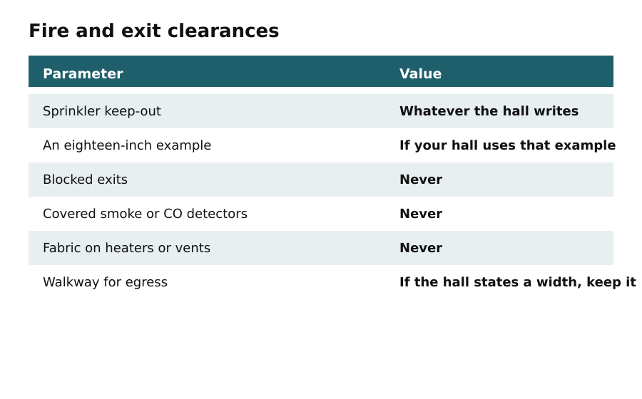
Housing rules win. Example numbers are examples.
Your blueprint at a glance: SLEEP profile → SIGHT layout → Privacy Stack → CALMR light → Noise strategy → R.E.S.T. agreement → CALM maintenance. Each named system is one layer, not a new religion. SIGHT means Shield the pillow, Isolate sleep from the walk, Guide one traffic path, Hide clutter, Threshold the bed. CALMR is Color, Angle, Layers, Micro-leaks, Ritual. R.E.S.T. is Respect, Expectations in writing, Shared quiet hours, Tune during exams. CALM is Clear surfaces, Arrange bedding, Lower stimuli, Maintain cables.
Policies vary by campus. Use the clearance your residence or housing authority specifies. Where they specify an eighteen-inch sprinkler keep-out, keep it. Where they specify a walkway width, keep that. Do not treat one campus number as a universal fire code. Never block exits, detectors, or vents. If you cannot drill, stick, hang, or install anything, skip to the zero-modification path later in this week — bed orientation, existing furniture, eye mask, earplugs, and light you already have still count.
Today's output
Name housing type
Highlight hall rules
Write the blueprint order on one line
Day 2 · Setting a Budget
Day 2
Setting a Budget
In this apartment
Aditi in a Bengaluru PG that cannot be drilled picks the rupee starter tier so she does not buy a canopy she is not allowed to hang.
Establish a clear spending tier to prioritize high-impact items.
Today's output: one rupee tier. Primary money system is Indian rupees. Starter about one thousand rupees. Balanced about three thousand. Complete about seven thousand. Dollar labels in older drafts are retired. If you live elsewhere, treat the tiers as low / medium / high and convert locally.
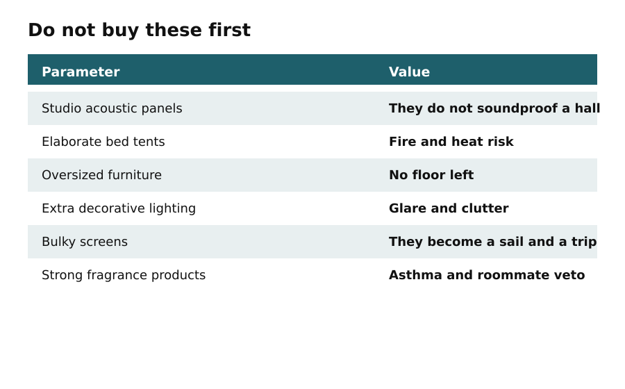
The biggest irritant first. A canopy is not a starter kit.
Starter: eye mask, earplugs, felt pads, cable wraps, a clip-on warm lamp if an outlet exists, a loose draft-stopper only if the door hardware allows it without install. Balanced: add a tension rod and curtain if housing allows, a runner, a compact sound machine. Complete: add a folding screen if allowed, a better blackout liner, a caddy — still no acoustic studio build.
Do not buy first: expensive acoustic panels, elaborate canopy systems, oversized furniture, extra decorative lighting, bulky screens, strong fragrance. Solve the biggest disturbance first. If housing bans rods and adhesive, stay on Starter and the zero-modification list.
Before you move on
Pick Starter, Balanced, or Complete in rupees
List three high-impact items
Cross off the do-not-buy-first list
Day 3 · Roommate Collaboration
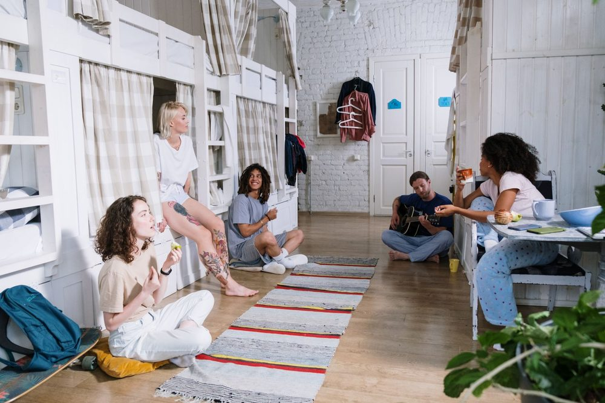
Day 3
Roommate Collaboration
In this apartment
Vikram and Neha in a Mumbai hostel twin agree on quiet hours before anyone hangs a curtain.
Engage in respectful conversations with roommates to ensure everyone’s needs are met.
Today's output: a 15-minute talk scheduled, plus an escalation ladder if the roommate refuses.
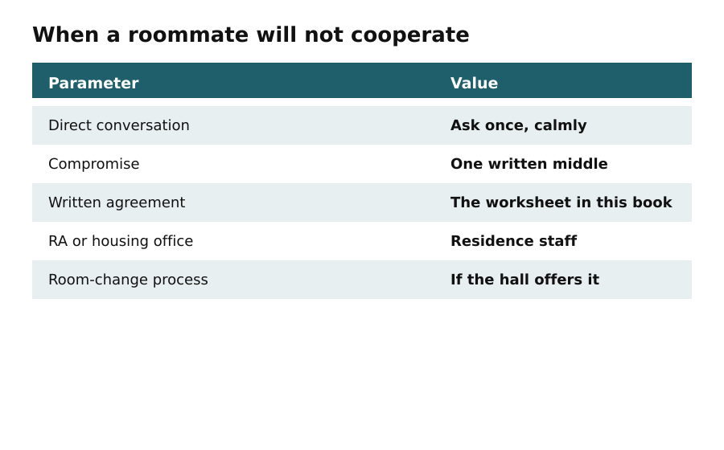
The RA is the next formal resource, not a threat you brandish on night one.
Ask in a calm moment. Offer reciprocal quiet and lamp angle. Write touchpoints: quiet hours, guest notice, overhead cutoff, headphone expectation.
If they refuse: Step 1 — direct conversation. Step 2 — one written compromise. Step 3 — a one-page agreement. Step 4 — RA or residence staff as a formal resource, not a punishment. Step 5 — the room-change process if your hall has one. Skip steps only if you are unsafe; then go to staff first.
Before you move on
Schedule the talk
Write the five-step ladder
Do not surprise-install a curtain
Day 4 · Measuring and Mapping
Day 4
Measuring and Mapping
In this apartment
Sita in a Pune residence-hall room measures bed, door swing, and the path a person with a brace would need.
Accurate measurements and mapping help identify areas needing improvement.
Today's output: a sketch with door, window, beds, desks, path, and pinch points. Adapt the blueprint to your mobility and sensory needs.
Measure bed, wall height, window, outlets, door swing. Draw traffic. Mark light and noise leaks. If you have a mobility limit, a temporary injury, low vision, or sensory sensitivity: keep a wider path where you need it; put chargers and switches in reach; kill trip cords; skip furniture that needs a two-person lift; choose low-effort storage; pick lighting you can actually use.
If you have almost no floor: 1 bed orientation, 2 walking path, 3 light control, 4 noise control, 5 vertical storage, 6 privacy screen only if it still leaves a path, 7 cables, 8 décor last.
Before you move on
Sketch the room
Mark a path you can actually use
Star the tiny-room priority if the floor is gone
Chapter opener
Chapter
Assess Your Sleep Profile And Room
Creating a calm sleep zone in a shared space requires precise assessment and collaboration. This chapter guides you through evaluating your sleep needs and room dynamics to implement effective changes.
Day 1 · Start With A Three Night Sleep Profile
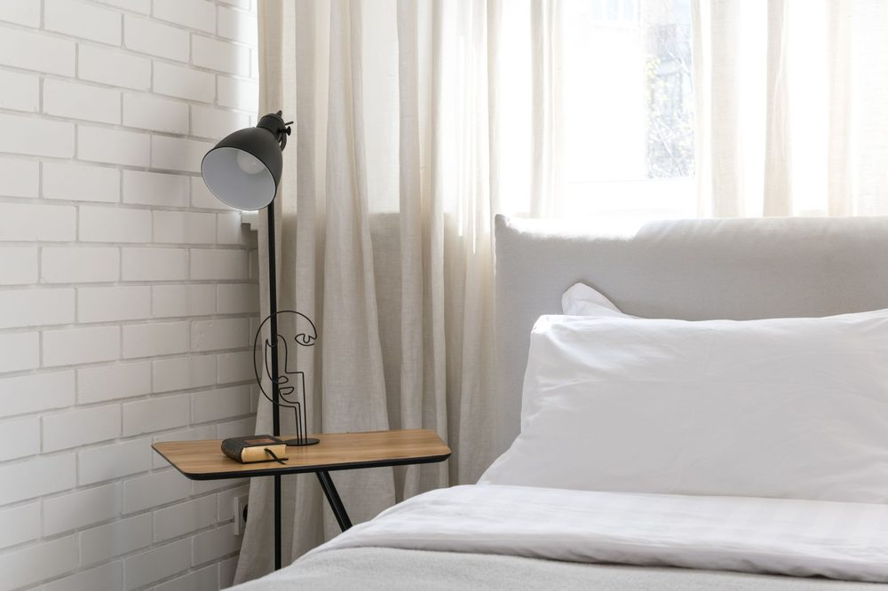
Day 1
Start With A Three Night Sleep Profile
In this apartment
Ravi in a Pune residence hall logs three nights of hallway light and roommate noise.
Understanding your sleep profile is crucial for identifying what affects your rest.
Today's output: three filled rows. Copy the table. Adults often need about seven hours; dorms steal that. Remove the worst irritant, not every irritant.
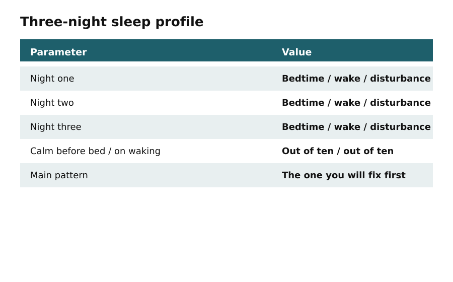
Empty cells mean you guessed. Fill them in the room.
Each night: bedtime, wake, main disturbance, clock time, severity one to five, solution you will try. Also rate calm before bed and on waking, out of ten.
The biggest repeating pattern is Day 2's job, not a shopping spree.
Today's output
Print three rows
Log tonight
Circle the pattern on night three
Day 2 · Profile Your Stimuli Thresholds
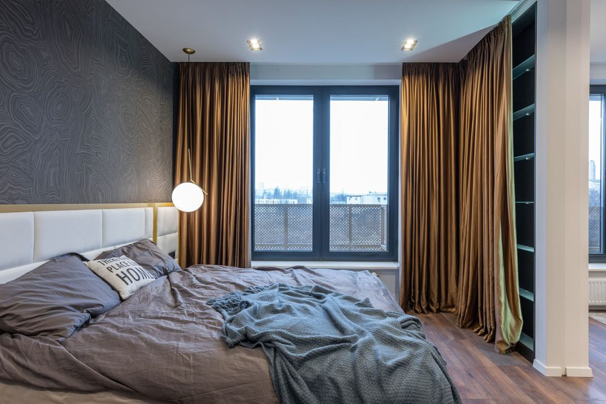
Day 2
Profile Your Stimuli Thresholds
In this apartment
Anita in a Bengaluru PG that cannot be drilled chooses blackout vs warm diffusion — fragrance stays off by default.
Identifying your thresholds for light, sound, and scent helps tailor your sleep environment effectively.
Today's output: light goal (blackout or diffusion), sound mask choice, scent policy written as fragrance-free unless everyone agrees.
Fragrance-free is the default. Optional fragrance only with explicit roommate agreement and where housing rules permit. Asthma, migraine, and allergy are vetoes. Do not run plug-in warmers, reeds, or lavender sprays as a 'calm' default.
Headphones and masks are tools, not a license for loud overnight volume.
Day 3 · Map Room Traffic And Sightlines
Day 3
Map Room Traffic And Sightlines
In this apartment
Vikram, living in a Mumbai hostel room with one window, sketches his room layout to identify pathways and sightlines that disrupt his sleep.
Mapping your room's layout reveals opportunities to enhance privacy and reduce disturbances.
Draw a simple plan of your room. Mark the door, beds, desks, closets, window, outlets, and vents. Add arrows for movement, such as door to bed, desk to closet, and window to desk. Highlight where pathways cross near your head. If the door opens with a direct line to your pillow, that sightline invites light and noise.
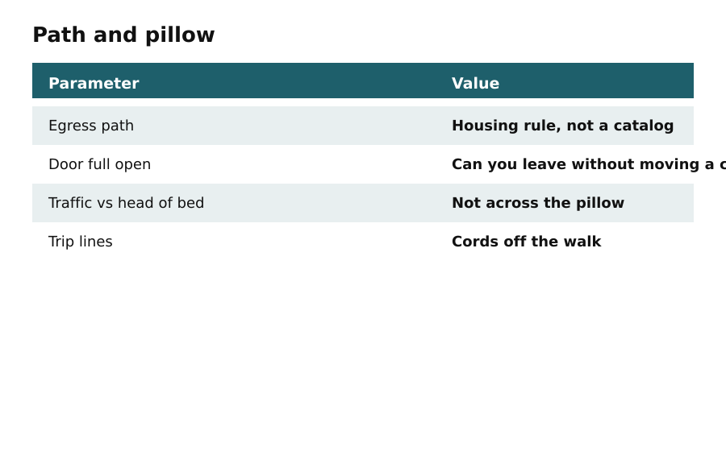
Use the walkway width your hall requires. An example twenty-four-inch path is only an example.
Note desk lamps that point toward sleep zones. Create two alternate layouts on paper where heads move out of direct door view, desks are angled to aim light at walls, and a freestanding rack or screen acts as a buffer. This sketching takes ten minutes and reveals privacy opportunities before you lift anything.
Day 4 · Run A Roommate Alignment Survey
Day 4
Run A Roommate Alignment Survey
In this apartment
Sita and her roommate in a Pune dorm conduct a quick survey to align their study and sleep schedules, ensuring a peaceful coexistence.
Aligning with roommates multiplies your gains in creating a calm sleep environment.
Today's output: one filled roommate worksheet, not a paragraph of good intentions.
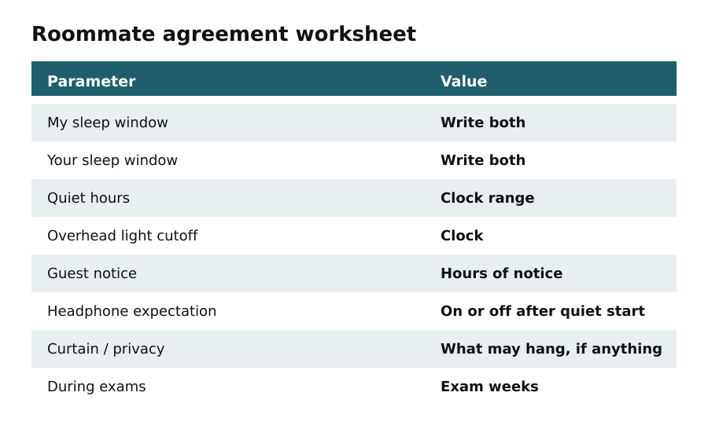
One page. Blank lines live in your notebook if the figure is tight.
Fill: my sleep window, your sleep window, quiet hours, overhead light cutoff, guest notice, headphone expectation, curtain or privacy expectation, what happens during exams.
If they will not fill it, use the escalation ladder from Day 3 of Foundations.
Before you move on
Print the worksheet
Fill your column
Leave theirs for the talk
Chapter opener
Chapter
Layout Optimization And Zone Planning
Optimizing your room layout is the quickest way to enhance your living space. By strategically placing furniture, you can control light, sound, and movement, creating a calm environment that supports rest and productivity.
Day 1 · Understanding Layout Challenges in Shared Spaces
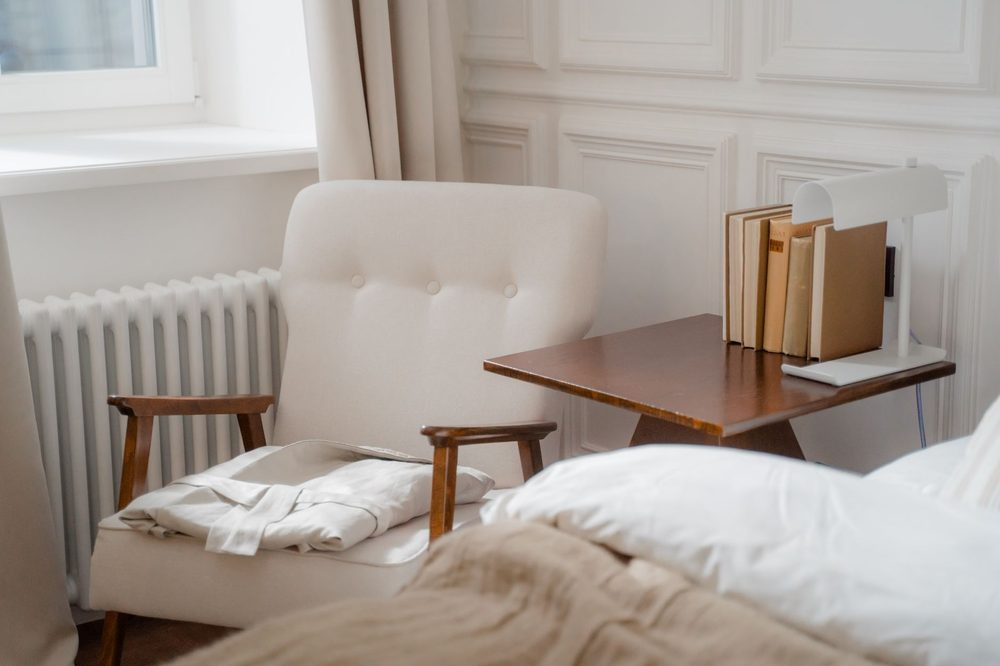
Day 1
Understanding Layout Challenges in Shared Spaces
In this apartment
In a shared hostel room in Pune, resident Priya often feels disturbed by the light that floods her bed from the hallway when her roommate enters. This constant exposure disrupts her sleep, making her feel on display.
Effective layout can minimize disturbances in shared rooms.
Shared rooms often face issues like uncontrolled glare, messy pathways, and zone confusion. For Priya, the door's position directly across from her bed means that every time her roommate enters, bright light hits her pillow, signaling morning even when it’s still night.
Ensure there is a pathway at least 24 inches wide for egress.
To combat this, Priya can use the SIGHT framework. By shielding her bed with a freestanding screen or curtain that intercepts light, she can create a more restful environment. Additionally, she should aim to minimize pathways that cross near her head, which can be achieved by rearranging furniture to create clear walking paths around her sleep zone.
Visual clutter can also add to the stress in shared spaces. By using bed skirts and storage baskets, Priya can conceal items that might otherwise distract her visually, allowing her nervous system to register less demand and more calm.
Day 2 · Applying the SIGHT Framework
Day 2
Applying the SIGHT Framework
In this apartment
In a Bengaluru rental, Rohan struggles with his desk lamp creating glare on his roommate’s bed. They both need to study and sleep without disturbing each other.
SIGHT is five letters, in order, on one shared bedroom.
Today's output: each SIGHT letter ticked on your sketch.
S — Shield the pillow from the door and from lamps. I — Isolate the sleep zone from the main walk. G — Guide one traffic path. H — Hide cables and bins. T — Threshold the bed with a rug, skirt, or allowed screen — never a sealed tent.
Rohan in a Bengaluru PG aims the desk lamp at the wall, not the other pillow. A runner marks the path. Clips hide cords. That is SIGHT. It is not a second book.
Before you move on
Write the five letters on the sketch
Aim lamps at walls
Keep one path
Day 3 · Implementing Room Layout Templates
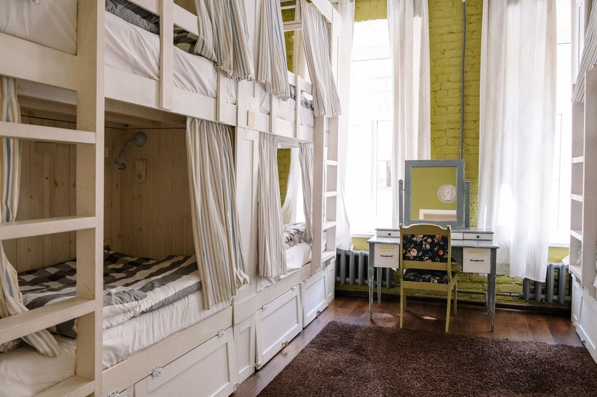
Day 3
Implementing Room Layout Templates
In this apartment
Aditi in a Mumbai hostel twin picks Type B and draws it before buying a screen.
Using layout templates can streamline the process of optimizing shared spaces.
Today's output: your type letter and a drawn path. The plug-and-play chapter repeats the same five diagrams as shopping tools — do not invent a sixth family.
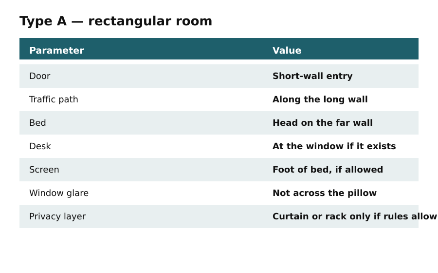
Bed, then desk, then optional screen. Door swing stays free.
Type A rectangular: door on the short wall; path along the long wall; bed head on the far wall; desk at the window; screen at the foot if allowed. Type B square shared: beds on adjacent walls, heads off the door line; desks in opposite corners; lamps at walls; low screen between beds only if airflow and egress stay. Type C bed opposite door: rotate or screen the door side first; do not block the swing. Type D window beside bed: control that window's glare before décor; keep the desk lamp off the glass bounce toward a pillow. Type E almost no floor: bed, path, light, noise, then stop shopping.
For each type the order is bed → desk → screen → window → door → traffic path → privacy layer. Housing rules can delete the screen.
Before you move on
Circle A B C D or E
Draw bed-desk-path
Delete any piece that blocks the door
Day 4 · Rearranging Your Space Effectively
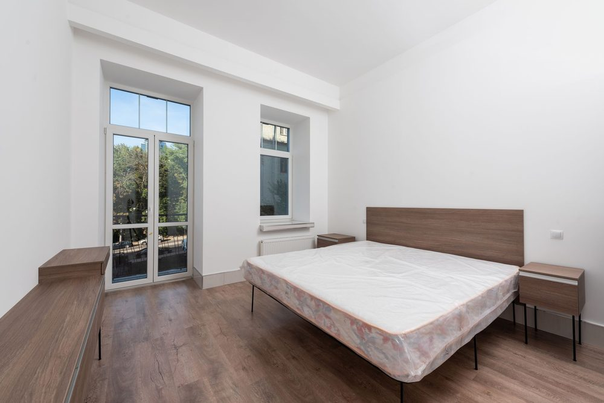
Day 4
Rearranging Your Space Effectively
In this apartment
In a Pune residence-hall room, Riya wants to rearrange her room to create a more restful environment without heavy lifting.
A systematic approach to rearranging can minimize effort and maximize results.
Riya can follow a simple sequence to rearrange her room in one afternoon. She should start by marking the proposed locations for her bed and desk with painter's tape. This allows her to visualize the new layout and check sightlines from her pillow before moving heavy furniture.
Next, she should start with lighter items like chairs and small shelves. This will help her get a feel for the new flow without the strain of heavy lifting. Once the lighter items are in place, she can shift her desk according to the chosen template, ensuring that lamps are turned toward walls to minimize glare.
Finally, Riya can reposition her bed with help, adding felt pads to the legs to protect her floors. After moving everything, she should test the new layout by lying down and checking sightlines, making adjustments as necessary.
Do this
Mark Before You Move: Use painter's tape to outline proposed locations for beds, desks, and screens.
Start Light: Move chairs, carts, and small shelves first to open space without heavy lifting.
Shift Desks Next: Place desks according to your template, turn lamps toward walls, and plug in to confirm reach without crossing paths with cables.
Day 5 · If this is your problem
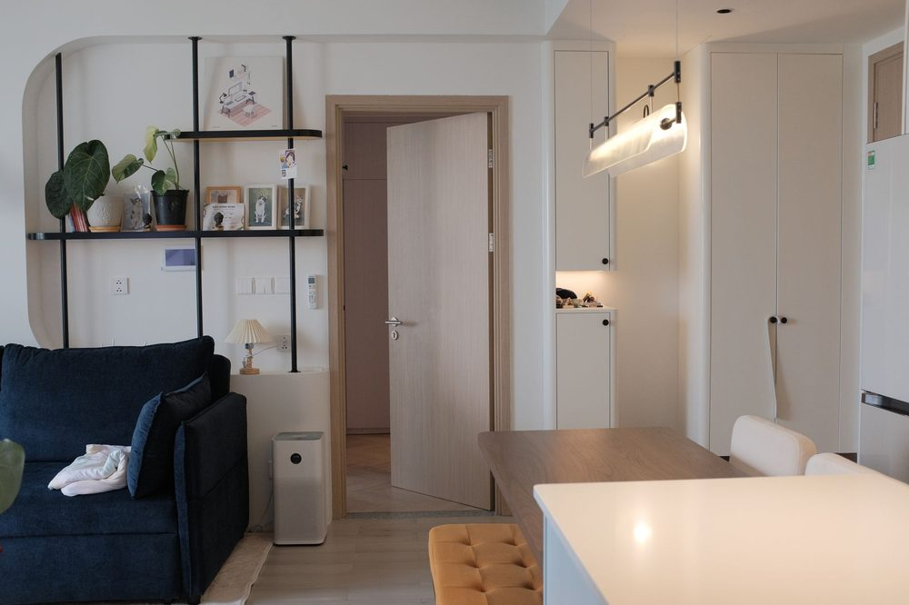
Day 5
If this is your problem
In this apartment
In a shared room in Bengaluru, two students want to ensure their layout supports both study and rest effectively.
Understanding key takeaways can help maintain a calm and functional living space.
Today's output: one symptom mapped to one next move. Later chapters are tools, not a re-pitch of SIGHT.
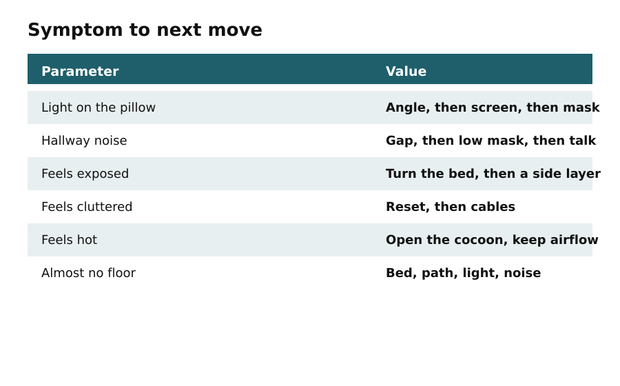
One problem. One move. Then stop shopping.
Light hits pillow → lamp angle → allowed screen → curtain → eye mask. Hallway noise → door gap → draft stopper if allowed → masking at low volume → agreement. Room feels exposed → bed orientation → lateral screen → curtain. Clutter → bedside reset → cables → storage. Hot → less enclosure → preserve fan or AC path → breathable layers. Tiny floor → the eight-step priority from measuring day.
Accessibility: wider path, reachable chargers, no hero lifting, lighting you can use.
Before you move on
Name the symptom
Do only the first move
Skip décor
Chapter opener
Chapter
Privacy Layering Without Damage
Transform your shared space into a personal sanctuary using non-invasive methods to enhance privacy and comfort. This chapter guides you through layering techniques that create a calm, cocooning environment without the need for drilling or permanent fixtures.
Day 1 · The Base Layer, Calm Starts At The Ground
Day 1
The Base Layer, Calm Starts At The Ground
In this apartment
In a shared hostel room in Pune, Riya has a bed positioned directly across from the door, making her feel exposed. She decides to orient her bed to create a more private space.
Orient your bed to minimize direct sightlines and create a calming threshold.
Today's output: bed turned so the head is not a door spotlight. If you cannot install anything, this orientation plus an eye mask is still the base layer.
Lay a soft rug along the approach to your bed. This not only absorbs foot noise but also signals a threshold, creating a more inviting atmosphere.
Install a bed skirt to conceal any bins or boxes under the bed. Visual clutter can keep your brain alert, so a skirt or neatly tucked blanket can help remove that stimulus.
Before you move on
Orient bed away from direct sightlines
Lay down a soft rug
Install a bed skirt to hide clutter
Day 2 · The Mid Layer, Strategic Screening Beats Full Closure
Day 2
The Mid Layer, Strategic Screening Beats Full Closure
In this apartment
In a shared flat in Bengaluru, Arjun feels the glare from a street lamp directly hitting his bed. He decides to add curtains to create a more private and restful environment.
Use lateral screening to reduce direct lines of sight without fully enclosing the space.
Curtains on tension rods can be installed inside window frames or between sturdy furniture. A rod holds a panel that blocks direct views and glare, making it an effective solution for privacy.
For wider spans, consider using a closet tension rod. Gradually increase the tension and test it with a light tug to ensure stability.
Freestanding frames can also be used. A garment rack can serve as a curtain stand, weighted with books or a water-filled jug hidden in a tote for stability.
If housing bans rods, hooks, and racks, you are on the zero-modification path: turn the bed, use a duvet as a visual edge on the mattress only, and skip hanging.
Before you move on
Install curtains on tension rods
Consider a freestanding frame for flexibility
Ensure stability of the curtain setup
Day 3 · The Top Layer, Canopy Without Compromise
Day 3
The Top Layer, Canopy Without Compromise
In this apartment
In a Mumbai hostel room with one window, Neha wants to create a cozy atmosphere around her bed without sacrificing airflow. She opts for a bed tent with mesh windows.
Do not build an enclosed sleeping compartment.
Today's output: a no-go list for overhead fabric, plus a heat check.
Residence-hall rules first. Never obstruct sprinklers. Never block exits. Do not cover smoke or carbon-monoxide detectors. Do not place fabric against heaters. Keep ventilation. Do not create an enclosed sleeping compartment. Do not use unstable overhead structures. Flame-resistant labels are not permission to tent a bed into a sealed box.
When the room is too hot: do not fully enclose the bed; preserve fan or AC airflow; do not block vents; use breathable fabrics; skip heavy layered curtains that trap heat. A mesh window is not a license to zip shut all night in a warm hall.
Today's output
Walk sprinklers and detectors
Leave an exit you can take in the dark
If it is hot, skip the tent
Day 4 · Implementation Strategy
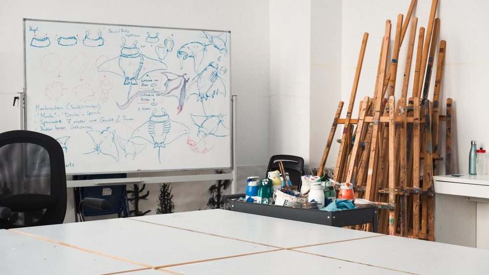
Day 4
Implementation Strategy
In this apartment
Siddharth, living in a Pune residence-hall room, plans to implement his privacy layering strategy over a week. He starts by measuring and planning his layout.
A structured approach ensures effective implementation of privacy layers.
Begin by assessing and measuring the priority side to screen, usually the door-facing side or the window. Measure spans to the nearest quarter inch and record height limits for rods and racks.
Use painter's tape to mark rod positions and temporarily drape fabric to preview the setup. Move pieces until you achieve effective coverage while still allowing air to flow.
Sketch out your Privacy Stack, including base adjustments, mid panels, and top canopy or tent. This visual plan will guide your installation process.
Before you move on
Measure spans and record height limits
Use painter's tape for previewing positions
Sketch out the Privacy Stack layout
Chapter opener
Chapter
Light Control For Restful Nights
This chapter trains the light in your room to serve your rhythms. You will learn how to block intrusive beams, warm the color temperature, and place dimmable lamps that respect both you and your roommate. You will leave with a plan you can set up in a single hour, plus a weekly routine that keeps your sleep zone calm.
Day 1 · Understanding the Impact of Light
Day 1
Understanding the Impact of Light
In this apartment
In a Pune residence-hall room, Riya struggles to sleep due to her roommate's bright study lamp shining directly at her pillow. The overhead lights are harsh, and the streetlight outside seeps through the window, disrupting her rest.
Light brightness and color drive your circadian clock.
Dorm lighting is designed for maximum visibility, not rest. Overhead fixtures blast cool, bright light, while windows spill light at the wrong times. This can be particularly disruptive in shared spaces, where one person's task lamp can become another's midnight sun. Without a light strategy, your sleep zone never feels private, and your rest suffers.
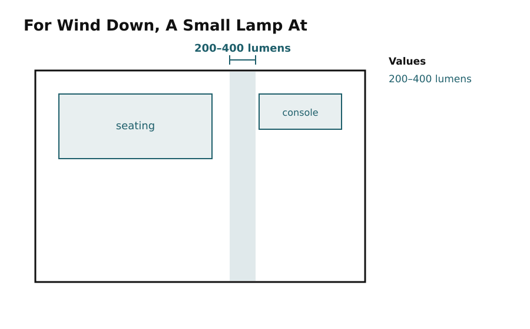
For wind down, a small lamp at 200 to 400 lumens is plenty.
The science is straightforward: bright, cool light tells your brain it is daytime, while warm, low light signals evening. When light is uncontrolled, melatonin production is delayed, resulting in poor sleep quality. Therefore, establishing a light control strategy is essential for restful nights, especially in shared living situations.
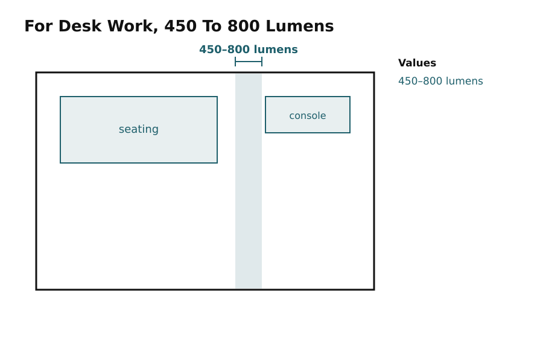
For desk work, 450 to 800 lumens, angled away from beds, usually works.
By implementing the CALMR Light Method, you can reshape the light in your room to respect both your circadian rhythm and your roommate's needs. This method focuses on color, angle, layers, micro leaks, and ritual to create a calm sleep environment.
Day 2 · Implementing the CALMR Light Method
Day 2
Implementing the CALMR Light Method
In this apartment
In a Bengaluru rental, Arjun and his roommate have a wall you are not allowed to drill that limits their furniture arrangement. They need to find a way to control the light without compromising their study space.
Use the CALMR Light Method to design the light in your dorm.
The CALMR Light Method consists of five key components: Color, Angle, Layers, Micro Leaks, and Ritual. Begin by shifting your bulbs to warm tones in the evening, ideally 2700K or lower, while reserving neutral 3000K to 4000K for morning or focused daytime tasks. This simple adjustment can significantly enhance your sleep quality.
Next, consider the angle of your light sources. Direct beams away from faces and pillows by aiming light down or toward walls, allowing it to bounce and soften. This reduces glare and creates a more restful environment. In Arjun's case, he can position his desk lamp to illuminate the wall instead of his roommate's pillow.
Layering is crucial for managing natural light. Use window blackout plus sheer diffusers for day and night flexibility. This allows you to control the amount of light entering your room without making permanent changes to the space, which is especially important in rented accommodations.
Day 3 · Creating a Light Ritual
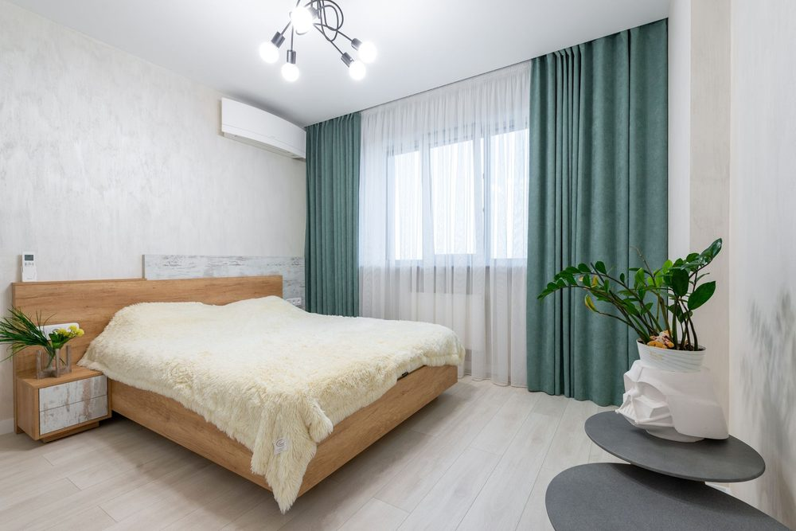
Day 3
Creating a Light Ritual
In this apartment
In a Mumbai flat, Neha finds it challenging to wake up early due to the bright streetlights outside her window. She wants to establish a light ritual that helps her transition from night to morning smoothly.
Create a repeatable schedule for light use.
Establishing a light ritual is essential for maintaining a calm sleep environment. After 9 p.m., switch to warm lamps on low dim settings and avoid using overhead lights. This signals to your brain that it is time to wind down. Neha can implement this by using a small bedside lamp with a 2700K bulb, ensuring that the light is soft and inviting.
In the morning, welcome diffused daylight to cue wakefulness. Neha can open her sheer diffusers to allow natural light to fill her room gently. This gradual exposure to light helps regulate her circadian rhythm and prepares her for the day ahead. Additionally, a brief morning blast at 4000K can mimic a bright day and help her perk up, but it should be kept short and indirect.
Finally, practice your evening ritual for three nights to refine the process. Adjust angles as needed to ensure that light does not disturb your roommate. By rehearsing this routine, Neha can create a predictable environment that supports her sleep and wakefulness.
Chapter opener
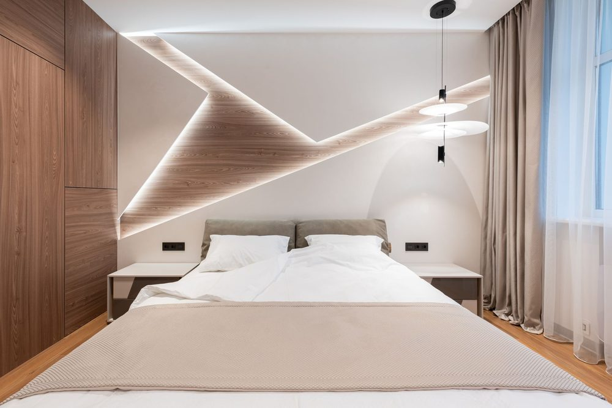
Chapter
Noise Softening And Sound Strategy
Dorm life hums with energy, which is exciting until that energy slips through your door at midnight and lands in your pillow. This chapter gives you a plan to quiet the chaos using soft materials, smart masking, and simple etiquette that respects everyone in the room.
Day 1 · Identifying Noise Sources
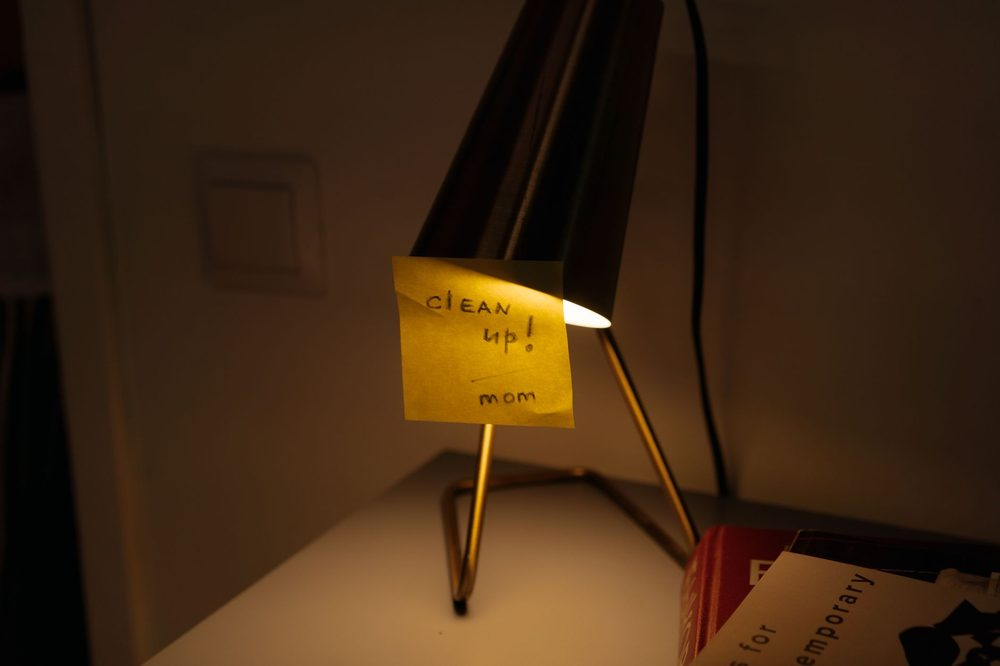
Day 1
Identifying Noise Sources
In this apartment
In her Pune hostel twin, Maya lies in bed, trying to sleep as hallway chatter seeps through her door. She decides to identify the noise sources that disrupt her peace.
Understanding the origins of noise is the first step to softening it.
Start by sitting or lying in your bed zone during your usual sleep time. Close your eyes and listen carefully to the sounds around you. Identify the loudest noises—are they voices from the hallway, the sound of wheels from the floor above, or perhaps a constant HVAC hum?
Mark each source with sticky notes or arrows on the wall or door, indicating the direction from which the sound arrives. Rate each source from one to five based on intensity and annoyance. Repeat this exercise on a busy night and a regular night to compare your findings.
This exercise will help you pinpoint which sounds are most disruptive, allowing you to focus your noise-softening efforts effectively.
Day 2 · Layering for Sound Absorption
Day 2
Layering for Sound Absorption
In this apartment
Jordan, living in a Bengaluru PG room that cannot be drilled, struggles with noise from his rolling chair and hard floors. He decides to layer his space to absorb sound.
Absorption is not soundproofing.
Today's output: what rugs can do, written beside what they cannot.
What this book can and cannot do about noise. Can help: echo, footfall, chair movement, rattling, some high-frequency intrusion, room harshness. Cannot reliably eliminate: bass, loud voices, construction, traffic, structural noise, a roommate who will not use headphones.
Soft layers cut reflections and impact. They do not block a hall argument. When the leftover noise is voices, bass, or structure: earplugs or comfortable headphones, a low masking sound, the R.E.S.T. sheet, then RA if informal talk fails.
Before you move on
Pad the path you actually walk
Write cannot-block on the sketch
Plan talk or plugs for the rest
Day 3 · Sealing Gaps for Sound Control
Day 3
Sealing Gaps for Sound Control
In this apartment
Lina, living in a Mumbai hostel room with one window, faces traffic noise that disrupts her studies. She decides to seal gaps to control sound.
Sealing small gaps can prevent noise from sneaking into your space.
The under-door gap is a major sound highway. Use a draft stopper or a door sweep if permitted, or place a low rug rolled tightly against the gap during sleep hours. This will help block noise from the hallway.
Windows can also be a source of unwanted sound. If policy allows, add removable weatherstrip to the sash edges. If not, hang heavier curtain panels on a tension rod within the frame, ensuring to overlap the edges generously to create a soft barrier against noise.
Keep fabrics off heaters and sprinklers. A draft stopper that is not installed — a removable sausage at the gap during sleep — is allowed in more halls than a screwed sweep. If even that is banned, use earplugs and masking, not a DIY door rebuild.
Day 4 · Choosing the Right Masking Sound
Day 4
Choosing the Right Masking Sound
In this apartment
Sam and Drew, sharing a desk area in their Pune apartment, find that typing echoes disrupt their focus. They explore masking sounds to improve their study environment.
The right masking sound can help cover disruptive noises without adding stress.
Today's output: a mask tested at the lowest useful volume, not a all-night roar.
Start low. Keep it just loud enough to soften the disturbing sound. Do not run excessive volume through the night. If you use headphones or earbuds, mind comfort and still being able to hear alarms or an emergency in the hall. More volume is not better, and it is not fair to a roommate who is already asleep.
Test white, pink, and brown in short blocks. Keep the one you stop noticing.
Before you move on
Start at the lowest setting
Raise only until the peak is softened
Confirm you can hear an alarm
Chapter opener
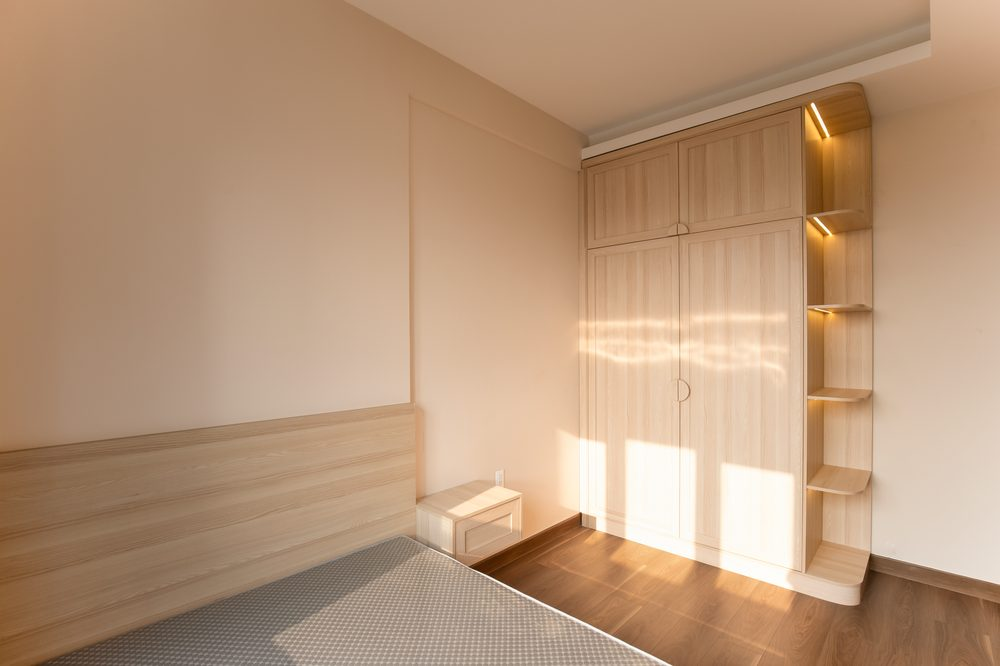
Chapter
Sensory Calm And Smart Storage
Creating a serene sleep environment is essential for relaxation and rest. This chapter guides you through establishing a sensory toolkit, implementing effective storage solutions, and managing cables to maintain a calm atmosphere in your living space.
Day 1 · Establishing Sensory Basics
Day 1
Establishing Sensory Basics
In this apartment
Ravi lives in a Pune residence-hall room with a nine-foot shared bedroom. He often finds it challenging to create a calming sleep environment amidst the clutter of daily life. By focusing on sensory basics, he aims to transform his bedroom into a peaceful retreat.
Fragrance-free is the default. Airflow beats perfume.
Today's output: breathable bedding and a written scent policy: none, unless everyone agrees and housing allows.
Cotton or linen-blend sheets. Low-pile runner if it does not steal the path. No plug-in warmers, reeds, or linen sprays as the standard kit.
Heat: skip extra throws that trap air if the hall is already warm. Do not add a canopy 'for calm' when the room cannot dump heat.
Before you move on
Pick breathable sheets
Write fragrance-free on the agreement
Drop a layer if you sleep hot
Day 2 · Creating Visual Order
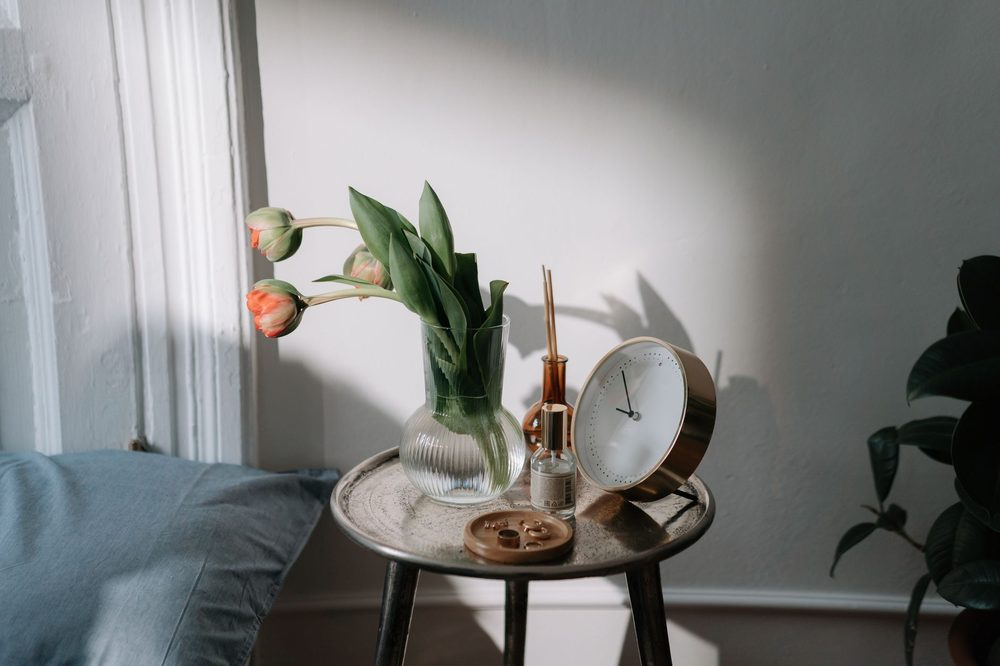
Day 2
Creating Visual Order
In this apartment
Ananya lives in a Bengaluru hostel where drilling is banned, which limits her layout options. She needs to simplify her space visually to enhance relaxation and reduce stress.
Visual simplicity helps your mind to relax and unwind.
To create visual order, decide what your bed view includes and exclude everything else that does not support sleep. A bed skirt can effectively hide under-bed bins, keeping the area looking tidy. On your nightstand, limit items to one book, earplugs, an eye mask, and a small water bottle to maintain a clean surface.
Color plays a crucial role in visual order. Choose matching or complementary neutrals for your sheets, duvet, and throw to create a cohesive look. If you enjoy color, consider adding a single accent pillow or throw that complements your wall art, ensuring that patterns are quiet near your pillow but can be bolder in the wind down zone.
By keeping your sleep items separate from study items, you help your brain map where things belong. Store study materials away from your sleep zone to prevent mental clutter.
Before you move on
Use a bed skirt to conceal storage bins under the bed.
Limit bedside items to essentials for sleep.
Choose a consistent color palette for bedding.
Day 3 · Implementing Smart Storage and Cable Management
Day 3
Implementing Smart Storage and Cable Management
In this apartment
Karan shares a Mumbai hostel twin room with limited space and only one window. He struggles with cable clutter and needs a system to keep his sleep zone organized and safe.
Effective storage and cable management can protect your calm space from clutter and hazards.
Separate sleep items from study items to maintain mental clarity. Use labeled bins under the bed or on a closet shelf to store extras. Designate one bin for bedding backups, another for wind down items, and a third for tech accessories. This organization helps reduce rummaging and keeps your sleep area serene.
For cable management, bundle cords with wraps and clip them along desk edges and bed frames to route them away from your sleep zone. Elevate the power strip on a removable hook under the desk or on the side of a shelf, ensuring that it remains clear of fabric to allow airflow and prevent hazards.
Label each charger with initials to avoid mix-ups, and consider placing a wireless charging pad on the desk rather than near your pillow to keep devices away from your head at night.
Before you move on
Store sleep and study items separately to maintain clarity.
Bundle and label all cables to prevent tangling.
Elevate power strips and ensure they are not covered by fabric.
Chapter opener
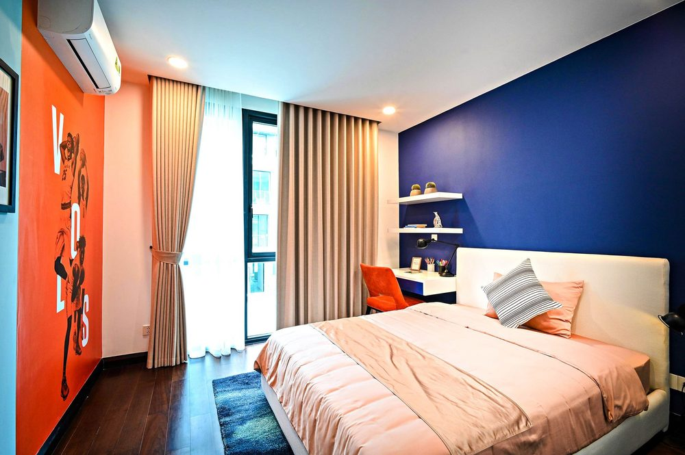
Chapter
Agreements, Reset Routines, And Long-Term Calm
Transform your living space into a sanctuary that thrives on clarity and rhythm. This chapter guides you through establishing agreements with roommates, maintaining a calm environment, and implementing routines that ensure your space remains a peaceful haven amidst the chaos of daily life.
Day 1 · Establishing R.E.S.T. Agreements
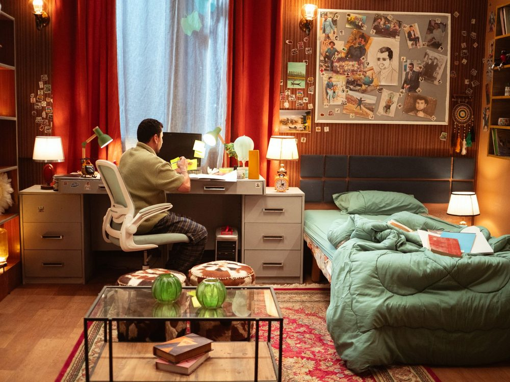
Day 1
Establishing R.E.S.T. Agreements
In this apartment
In her shared hostel room in Pune, Meera often finds herself disturbed by her roommate's late-night study sessions. To address this, she decides to implement R.E.S.T. agreements to create a more peaceful living environment.
Clear agreements foster a calm living space by setting mutual expectations.
Today's output: R.E.S.T. filled — Respect, Expectations on the worksheet, Shared quiet hours, Tune for exams — plus the refusal ladder if they will not sign.
Meera in a Pune hostel twin asks for overheads off after a set clock and warm lamps only. Write it. Vague 'be quiet' is not an agreement.
If they refuse, do not keep adding curtains as a substitute for a talk. Use the five-step ladder.
Before you move on
Define respect in shared living
Outline specific expectations
Set shared quiet times
Day 2 · Implementing the CALM Loop
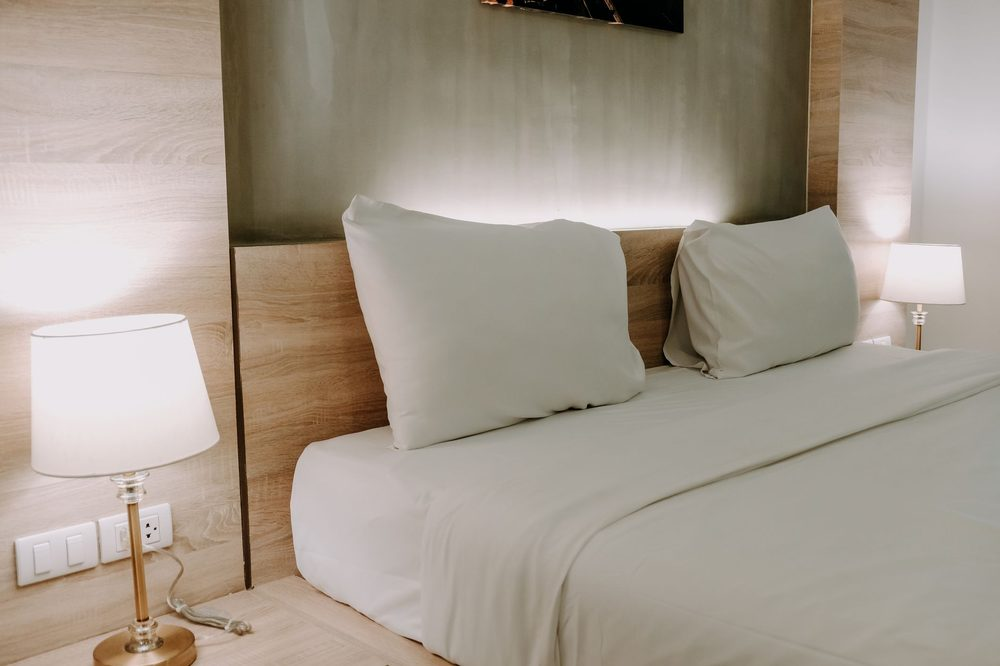
Day 2
Implementing the CALM Loop
In this apartment
In her Bengaluru PG room that cannot be drilled, Priya realizes her living space needs a daily maintenance routine to stay organized and calm, especially with limited space.
A consistent maintenance routine preserves the calm atmosphere of your living space.
The CALM Loop consists of four simple steps: Clear surfaces, Arrange bedding, Lower stimuli, and Maintain cables. Priya sets a daily reminder to spend ten minutes each evening following this loop. This routine helps her keep her space tidy and reduces visual clutter, which can be distracting.
Clearing surfaces involves putting away items that don’t belong in the living area. Priya makes it a habit to tidy her desk and put away any clothes or items lying around. This small daily effort prevents clutter from building up and keeps her space inviting.
Arranging bedding and lowering stimuli are equally important. Priya ensures her bed is made every morning and that she uses soft lighting in the evenings. By maintaining her cables and keeping them organized, she creates a visually calming environment that supports her focus and relaxation.
Before you move on
Set a daily reminder for the CALM Loop
Clear surfaces daily
Arrange bedding every morning
Day 3 · Conducting Weekly and Monthly Resets
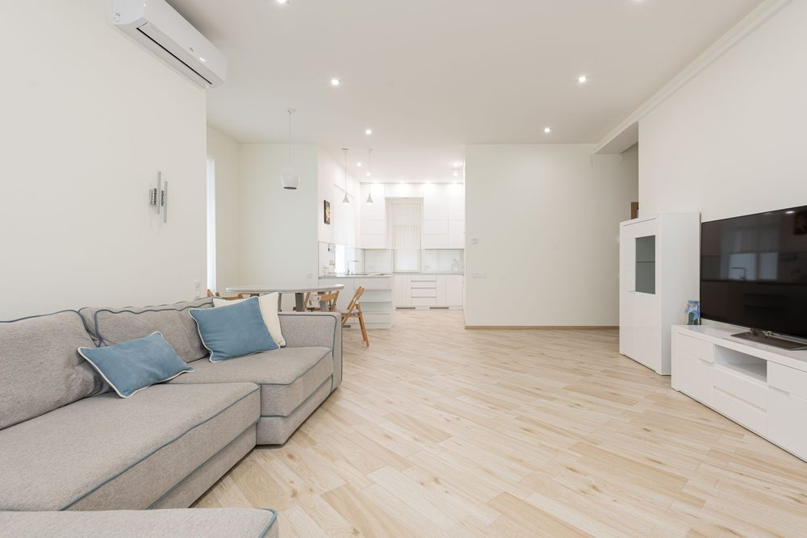
Day 3
Conducting Weekly and Monthly Resets
In this apartment
In a Mumbai hostel room with one window, Aditi finds that her living space can become cluttered and chaotic. She decides to implement weekly and monthly resets to maintain her sanctuary.
Regular resets keep your living space functional and calm, preventing clutter from taking over.
A weekly reset should take about 20 minutes. Aditi schedules this for Sunday afternoons. During this time, she launders her bedding, vacuums the floor, wipes down surfaces, and checks the tension on her curtains. This routine helps her maintain a clean and inviting environment, ready for the week ahead.
Monthly resets are essential for long-term maintenance. Aditi sets aside 30 minutes at the beginning of each month to reangle her lamps as daylight shifts, rotate her curtains for cleaning, and revisit her agreements with her roommate. This proactive approach prevents small issues from becoming larger problems.
By integrating these resets into her routine, Aditi ensures her living space remains a sanctuary that supports her well-being. She also tracks her progress and makes adjustments as needed, keeping her environment aligned with her needs.
Before you move on
Schedule a weekly reset time
Perform monthly maintenance tasks
Review agreements during resets
Chapter opener
Chapter
7-Day Dorm Sanctuary Sprint Checklist
Transform your shared dorm bed area into a calm, private sleep zone in just one week. This checklist respects RA rules and shared constraints while delivering privacy, light control, and noise relief quickly and effectively.
Day 1 · Day 1: Foundations
Day 1
Day 1: Foundations
In this apartment
Aisha in a Delhi residence hall reads the rules and picks the rupee Starter tier (about one thousand rupees), not a dollar card.
Establish a solid foundation for your sleep zone by understanding the rules and gathering necessary materials.
Today's output: rules highlighted, rupee tier chosen, one-sentence outcome. This week is a tool pass, not a second foundations lecture.
Starter / Balanced / Complete in rupees. If you cannot install anything, you are still on Starter: mask, plugs, lamp angle, bed turn.
Outcome sentence example: I can sleep without the door light on my face, without blocking an exit.
Do this
Read hall rules
Choose rupee tier
Write the outcome sentence
Before you move on
Read hall rules
Choose rupee tier
Write the outcome sentence
Day 2 · Day 2: Assess and Plan
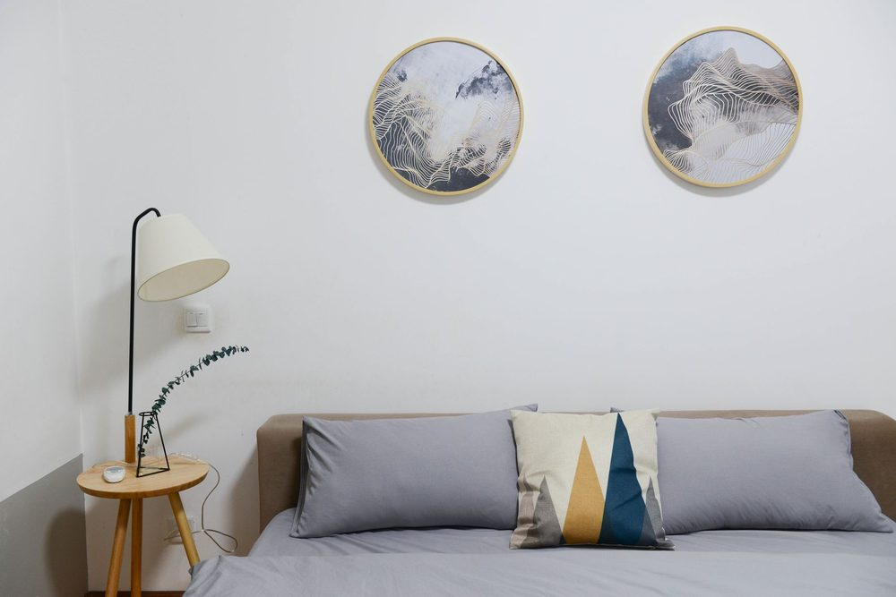
Day 2
Day 2: Assess and Plan
In this apartment
In her Bengaluru rental, student Rahul logs the disruptors affecting his sleep, noting the street noise and light from the window. He measures the window width and bed zone to plan his interventions.
Assessing your environment is crucial for identifying the best solutions to enhance your sleep space.
Begin by logging the disruptors in your environment, such as light, sound, and temperature. This will help you understand what aspects need the most attention.
Map out the traffic lines from the door and window to your bed. This will inform your layout decisions and ensure that your space remains functional and safe.
Measure the width of your window and the area around your bed. This information will be essential for selecting the right curtains and other materials.
Do this
Log disruptors like light, sound, and temperature.
Map traffic lines from door and window to bed.
Measure window width and bed zone.
Before you move on
Log disruptors
Map traffic lines
Measure window and bed area
Prototype towel curtain test
Day 3 · Day 3: Layout Optimization
Day 3
Day 3: Layout Optimization
In this apartment
In a shared Pune residence-hall room, student Meera rearranges her furniture to optimize her sleep zone. She moves her desk and bed while ensuring that all cables are neatly routed along the edges.
Optimizing your layout can significantly improve the functionality and comfort of your sleep space.
Start by moving light items, followed by heavier pieces like desks and beds. This allows you to experiment with different configurations without straining yourself.
Add felt pads under the legs of your furniture to protect the floor and reduce noise. Test different angles from your pillow to find the most comfortable position for sleeping.
Route cables along the edges of the room using clips to keep them organized and out of the way. Label your chargers to avoid confusion and ensure easy access.
Do this
Move light items first, then desks, then bed.
Add felt pads under furniture legs.
Route cables along edges and label chargers.
Before you move on
Move furniture for optimal layout
Add felt pads under furniture
Route cables neatly
Label chargers
Day 4 · Day 4: Privacy Layering
Day 4
Day 4: Privacy Layering
In this apartment
In a Mumbai hostel room with one window, student Arjun installs tension rods and clips curtains to create a private sleep zone while ensuring airflow is maintained.
Layering for privacy is essential for creating a restful environment in shared spaces.
Install tension rods or a freestanding frame to hang curtains. This allows you to create a barrier without damaging walls or ceilings.
Clip curtains to the rods to enhance privacy. Make sure to keep airflow clear to avoid stuffiness in your sleep zone.
Discuss curtain courtesy with your roommate to establish mutual respect for privacy and shared space.
Do this
Install tension rods or freestanding frame.
Clip curtains for privacy.
Agree on curtain courtesy with roommate.
Before you move on
Install tension rods or frame
Clip curtains for privacy
Discuss curtain courtesy
Day 5 · Day 5: Light Control
Day 5
Day 5: Light Control
In this apartment
In her Chennai residence-hall room, student Priya pairs blackout curtains with a thin diffuser layer on her window to control light effectively while adding warm clip-on lamps.
Controlling light in your sleep zone is crucial for promoting restful sleep.
Pair blackout curtains with a thin diffuser layer on your windows to block out harsh light while allowing a soft glow. This combination helps create a calming atmosphere.
Place clip-on lamps with warm bulbs at 2700K around your room to provide gentle lighting during the evening. This will help signal to your body that it’s time to wind down.
Block any under-door light with a draft stopper or rug to prevent light from disturbing your sleep. Dim device LEDs with stickers to minimize distractions.
Do this
Pair blackout curtains with a thin diffuser layer.
Use clip-on lamps with warm bulbs.
Block under-door light with a draft stopper.
Before you move on
Pair blackout curtains with diffuser
Use warm light for lamps
Block under-door light
Day 6 · Day 6: Noise Softening
Day 6
Day 6: Noise Softening
In this apartment
In a noisy area of Kolkata, student Riya lays a rug runner and pads under her chairs to soften noise while positioning a sound machine near the source of disturbance.
Softening noise is essential for creating a peaceful sleep environment.
Lay a rug runner in your sleep zone and add pads under chairs to absorb sound and reduce echoes. This will create a more serene atmosphere.
Position a sound machine near the noise source to mask disruptive sounds. Choose a sound that you find calming, such as white noise or nature sounds.
Hang soft textiles opposite noise sources to further dampen sound. This could include wall hangings or additional curtains.
Do this
Lay a rug runner and pads under chairs.
Position a sound machine near noise source.
Hang soft textiles opposite noise sources.
Before you move on
Lay rug runner and pads
Position sound machine
Hang soft textiles
Day 7 · Day 7: Score it
Day 7
Day 7: Score it
In this apartment
Neha in a Hyderabad PG fills the before/after card. Fragrance stays off.
Creating a sensory-rich environment and establishing agreements with roommates enhances the overall sleep experience.
Today's output: a before/after scorecard and Keep / Change / Remove. No new lavender.
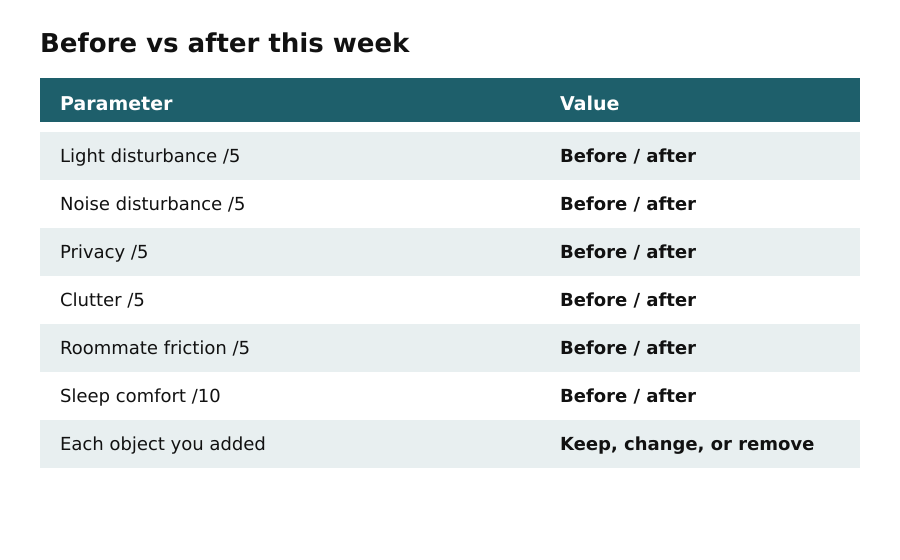
Guessing is optional. The card is the point of Day 7.
Score light, noise, privacy, clutter, roommate friction out of five, sleep comfort out of ten — before this week and after. If a number did not move, change the layer or remove the gadget.
Post the R.E.S.T. sheet if they agreed. Start CALM at night. If they refused, take the next escalation step, not a bigger canopy.
Do this
Fill before and after
Mark Keep / Change / Remove
Fragrance stays default off
Before you move on
Fill before and after
Mark Keep / Change / Remove
Fragrance stays default off
Chapter opener
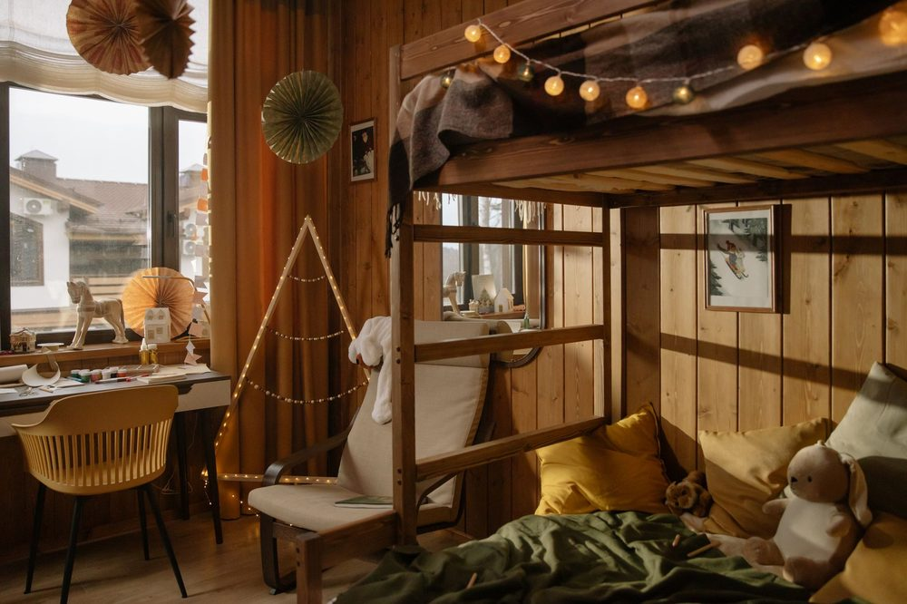
Chapter
Creating a Calm Shared Space: Roommate Agreement Script Pack
Setting boundaries in shared living spaces can be challenging, but with the right approach, you can create a peaceful environment that respects everyone's needs. This chapter outlines a structured plan to establish agreements on light, noise, and privacy in a shared room, ensuring a functional and friendly atmosphere.
Day 1 · Purpose and Benefits
Day 1
Purpose and Benefits
In this apartment
Priya and Aman in a Pune hostel twin fill the one-page sheet instead of arguing at 1 a.m.
Establishing boundaries reduces conflicts and enhances comfort in shared spaces.
Today's output: the same worksheet as the survey — this pack is the script, not a new theory chapter.
Use the filled lines: sleep windows, quiet hours, overhead cutoff, guest notice, headphones, privacy, exams.
If they will not play, stop re-explaining CALMR. Escalate.
Day 1 · Day 1: Preparation
Day 1
Day 1: Preparation
In this apartment
In their shared Pune apartment, Priya and Aman sit down to identify their top two needs: light and noise. They gather a warm desk lamp, a dimmer, a curtain panel, and a white noise machine to prepare for their agreement.
Preparation is key to successfully implementing a roommate agreement.
To begin, Priya and Aman identify their top two needs: light and noise. This step is crucial as it sets the foundation for their agreement. They decide that they need a warm desk lamp to create a cozy atmosphere and a white noise machine to mask any disruptive sounds during study sessions.
Next, they gather the necessary items: a warm desk lamp, a dimmer switch, a curtain panel, and a white or brown noise machine. Having these tools on hand will facilitate their discussions and help them visualize the changes they want to implement in their shared space.
Finally, they set a timeline for their agreement, aiming to run a trial for three nights. This structured approach allows them to evaluate the effectiveness of their agreements and make necessary adjustments.
Day 2 · Day 2: Opening Alignment
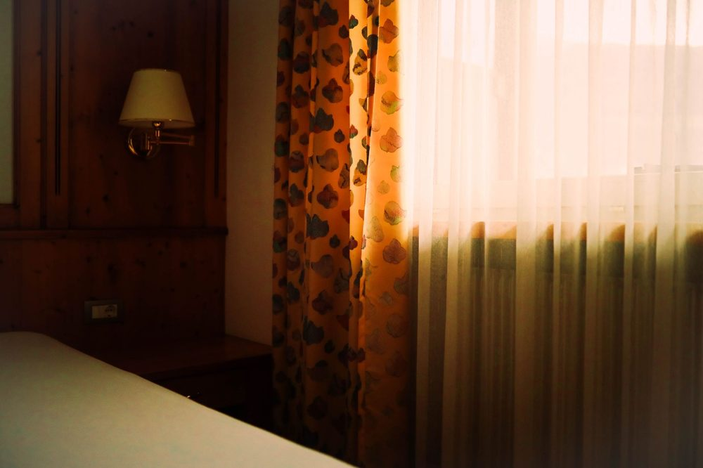
Day 2
Day 2: Opening Alignment
In this apartment
Priya and Aman sit down for their Opening Alignment meeting in their Pune apartment. They use the Opening Alignment Script to set goals and tone for their roommate agreement.
Setting a positive tone fosters cooperation and understanding.
During their Opening Alignment meeting, Priya uses the Opening Alignment Script to express her desire for a calmer sleep area. She states, "I am working on a small, compliant setup to make my sleep area calmer, things like a curtain panel and warm desk lamp. My goal is to rest better and keep our room functional. Can we agree on quiet windows and lamp angles after 9 p.m.?" This clear communication sets a positive tone for their discussions.
Aman responds positively, acknowledging the need for both of them to have a comfortable living space. They agree to establish quiet windows from 9 p.m. to 7 a.m., ensuring that both can enjoy their routines without disturbing each other.
By the end of their meeting, they feel more aligned and ready to tackle the next steps in their agreement, knowing they have a mutual understanding of each other's needs.
Day 3 · Day 3: Lamp Discipline
Day 3
Day 3: Lamp Discipline
In this apartment
In their shared Pune apartment, Priya and Aman implement the Lamp Discipline Script to manage their lighting needs after 9 p.m.
Establishing lamp discipline helps maintain a peaceful environment during nighttime hours.
On Day 3, Priya and Aman focus on lamp discipline. Priya explains to Aman, "The overhead light wakes me when I am settling down. Would you be okay using the clip-on lamp aimed at your desk after 9 p.m.? I can share a warm bulb and dimmer if helpful." This approach allows them to maintain a functional workspace while respecting each other's sleep needs.
They decide to position the clip-on lamp so that it illuminates Aman's desk without disturbing Priya. The warm bulb creates a cozy atmosphere, and the dimmer allows Aman to adjust the brightness as needed.
By implementing this lamp discipline, both roommates can enjoy their respective activities without compromising each other's comfort, leading to fewer conflicts and a more harmonious living space.
Day 4 · Day 4: Curtain Courtesy
Day 4
Day 4: Curtain Courtesy
In this apartment
Priya and Aman work together to install curtain clips in their Pune apartment, ensuring airflow gaps are maintained for comfort.
Respecting curtain placement enhances privacy and comfort for both roommates.
On Day 4, Priya and Aman focus on curtain courtesy. Priya explains, "If my curtain is angled closed at night, please keep it in place and avoid leaning objects on it. I have left airflow gaps, so it should feel fine. If it bothers you, let us adjust clips together." This clear communication helps establish respect for each other's space.
They install the curtain clips together, ensuring that airflow gaps are maintained. This allows for ventilation while still providing privacy during the night. They agree that if either of them feels uncomfortable with the curtain placement, they will discuss it openly and make adjustments as needed.
By respecting each other's curtain preferences, Priya and Aman create a more comfortable and private environment, allowing both to feel at ease in their shared space.
Day 5 · Day 5: Guest Policy
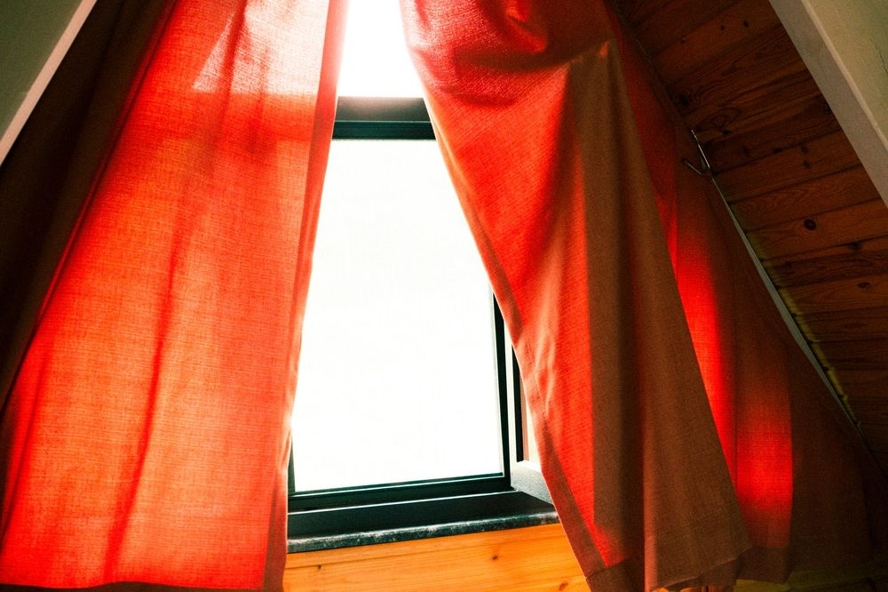
Day 5
Day 5: Guest Policy
In this apartment
Priya and Aman establish a guest policy in their Pune apartment to manage social interactions and maintain a peaceful environment.
Setting guest policies helps manage social dynamics and maintain comfort in shared spaces.
On Day 5, Priya and Aman focus on establishing a guest policy. Priya suggests, "When friends visit, could we keep conversation away from beds and wrap by 11 p.m. most nights? I will use brown noise to mask chatter, and I will give you a heads up for any early morning prep." This proactive approach helps set clear expectations for social interactions.
They agree to communicate in advance about any guests, ensuring that both are comfortable with the arrangements. By setting a time limit for conversations, they can enjoy socializing without disrupting each other's routines.
This guest policy fosters a sense of respect and understanding, allowing both roommates to maintain their comfort and privacy while still enjoying social interactions.
Day 6 · Day 6: Trial Run
Day 6
Day 6: Trial Run
In this apartment
Priya and Aman conduct a trial run of their agreements in their Pune apartment, evaluating the effectiveness of their new setup.
A trial run allows roommates to assess the effectiveness of their agreements and make necessary adjustments.
On Day 6, Priya and Aman run a trial of their agreements for three nights. They each commit to following the established rules regarding light, noise, and guest policies. This trial period provides an opportunity to assess how well the agreements are working in practice.
During the trial, Priya uses her white noise machine to mask any disturbances from Aman's late-night study sessions, while Aman adjusts the lamp to ensure it doesn't disturb Priya's sleep. They both take note of any challenges or successes during this period.
At the end of the trial, they feel more connected and comfortable in their shared space, having successfully navigated their needs and preferences.
Day 7 · Day 7: Review and Adjust
Day 7
Day 7: Review and Adjust
In this apartment
Priya and Aman meet to review their trial run in their Pune apartment, discussing what worked and what needs adjustment.
Regular check-ins are essential for maintaining a harmonious living environment.
On Day 7, Priya and Aman conduct a review of their trial run. They use the Maintenance Check In Script to discuss what is working and what might need tweaking. Priya asks, "What is working with the new setup? Lamp angles are good for me. Any tweaks needed, noise levels, curtain position, guest timing? Let us pick a small adjustment for this week." This structured approach allows them to address any concerns openly.
During their discussion, they identify a few areas for improvement, such as adjusting the noise level of the white noise machine and fine-tuning the curtain clips for better airflow. They agree to make these adjustments and continue with their agreements for another week.
By regularly checking in and making adjustments, Priya and Aman can maintain a comfortable and respectful living environment, ensuring that both feel heard and valued.
Chapter opener
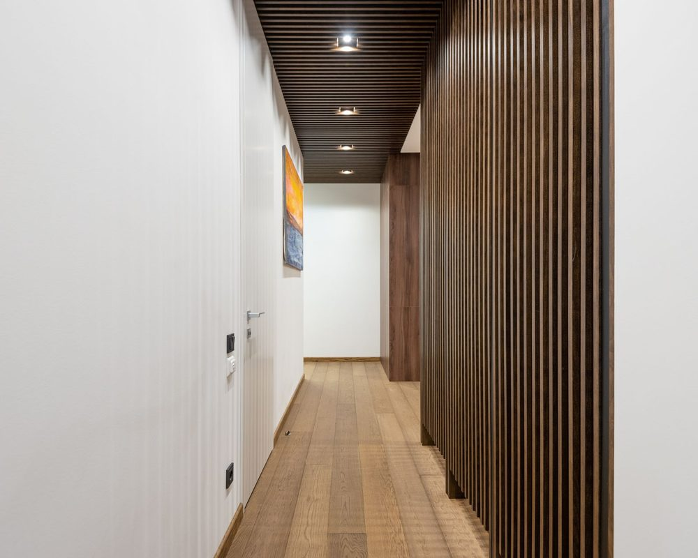
Chapter
RA Compliance And Non-Damaging Install Guide
This guide provides essential strategies for creating a compliant and comfortable living space in residence halls, ensuring that installations are safe, reversible, and respectful of housing rules.
Day 1 · Purpose and Benefits
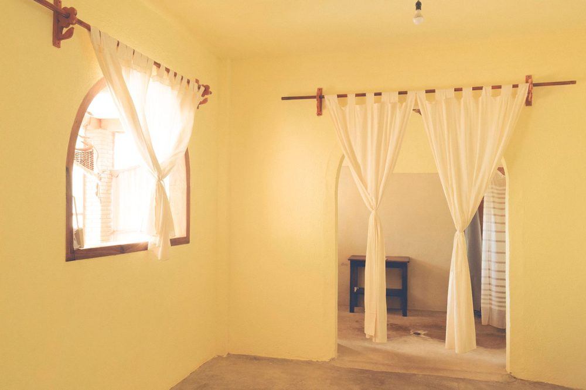
Day 1
Purpose and Benefits
In this apartment
Ravi in a Pune residence hall wants a sleep zone without a fine. If even hooks are banned, he still has a path.
Implementing non-damaging installations protects your space while enhancing comfort.
Today's output: either a reversible install plan or a completed zero-modification setup.
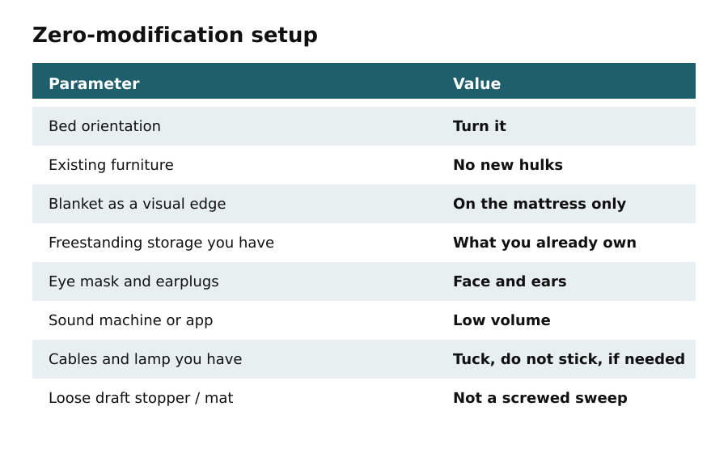
If the hall bans rods and hooks, you are not out of the book.
If you cannot drill, stick, hang, mount, or install anything: turn the bed; use existing furniture; fold a blanket as a visual edge on the mattress; use freestanding storage you already own; eye mask; earplugs; portable sound at low volume; existing curtains; cable wraps that do not need adhesive if you can tuck; move the lamp you have; a removable floor mat; a loose under-door stopper only if it is not a fixture. That is a guaranteed fallback.
Reversible installs still need housing permission. Trust with the RA is documentation, not a loophole.
Day 2 · Compliance Quick Checklist
Day 2
Compliance Quick Checklist
In this apartment
Aditi, living in a Bengaluru PG room that cannot be drilled, reviews the compliance checklist before installing her new curtains to ensure she avoids any violations.
Following a compliance checklist helps prevent common mistakes during installations.
Today's output: an emergency-access pass. Use the hall's numbers, not this book's examples as law.
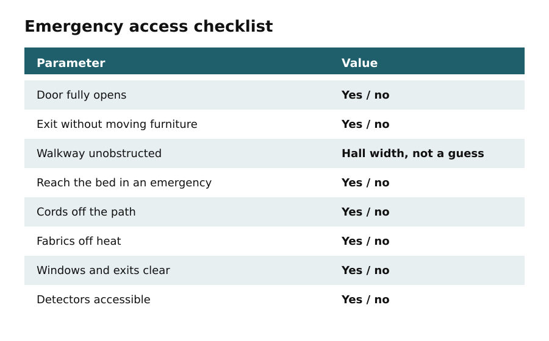
A pretty curtain that traps you is a fail.
Can the door fully open? Can you exit without moving furniture? Is the walkway unobstructed? Can emergency personnel reach the bed? Are cords off walking paths? Are fabrics away from heat? Are windows and exits unobstructed? Are smoke and CO detectors accessible?
Where your hall specifies a walkway width — including an example twenty-four-inch rule — keep it. Where they specify sprinkler clearance — including an example eighteen-inch radius — keep it.
Before you move on
Open the door fully
Walk out in the dark in your head
Fix any no
Day 3 · Step by Step Minis
Day 3
Step by Step Minis
In this apartment
Karan, living in a Mumbai hostel room with one window, decides to install a privacy curtain using a tension rod. He follows the step-by-step guide to ensure compliance.
Detailed steps ensure proper installation and compliance with housing rules.
To install a privacy curtain with a tension rod, first measure the inside span of the window frame. This ensures that the rod fits perfectly without any overextension.
Set the rod slightly longer than the span to allow for a snug fit. Next, add a blackout or privacy panel using clips to ensure that the fabric hangs properly and provides the desired level of privacy.
Test the installation by gently tugging at the center and ends of the curtain to ensure stability. This step is crucial to avoid any accidents or damage to the walls.
Do this
Measure inside span.
Set rod slightly longer than span.
Add blackout or privacy panel with clips.
Test by tugging gently at center and ends.
Chapter opener
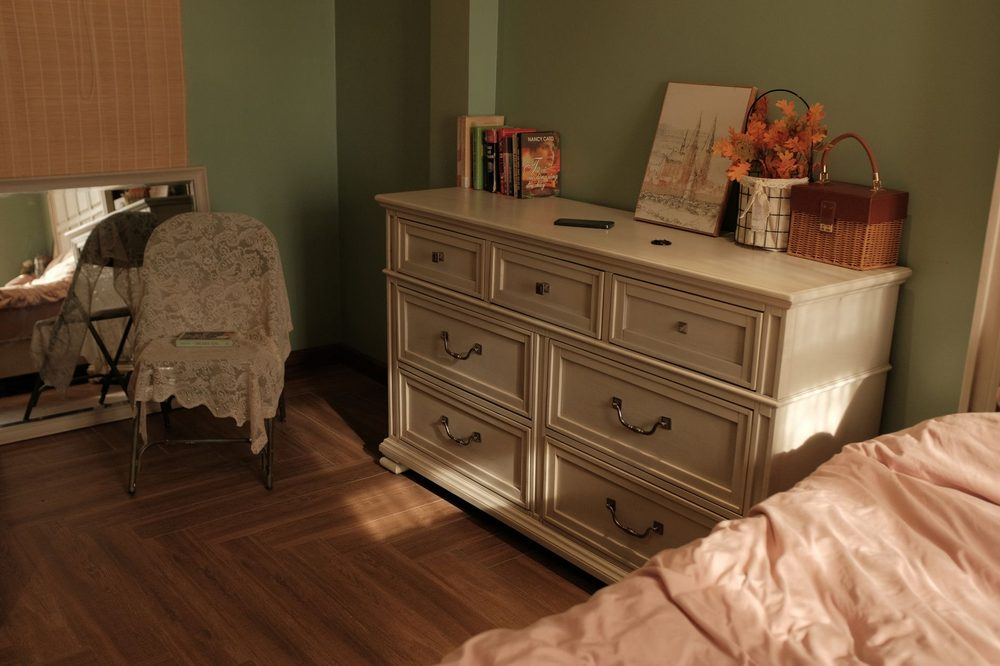
Chapter
Plug-And-Play Layout Templates And Shopping Lists
Tools only: five drawable types, rupee shopping, then a master checklist. Concepts live in the earlier chapters. Do not re-teach SIGHT here.
Day 1 · Understanding Your Room Type
Day 1
Understanding Your Room Type
In this apartment
Riya in a Pune hostel twin picks Type A or B from the diagrams, not from a 1BHK living-room story.
Identify your room type to match layouts and budgets effectively.
Today's output: type letter plus the seven-point order drawn once.
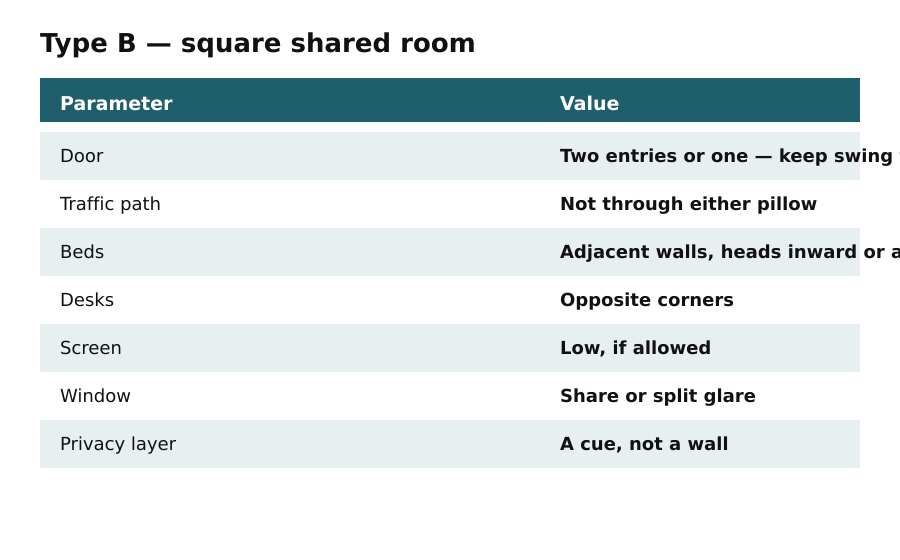
Heads off the door line. Lamps at walls. Airflow stays.
Type A rectangular. Type B square shared. Type C bed opposite door. Type D window beside bed. Type E extremely constrained. Same order every time: bed → desk → screen → window → door → traffic path → privacy layer.
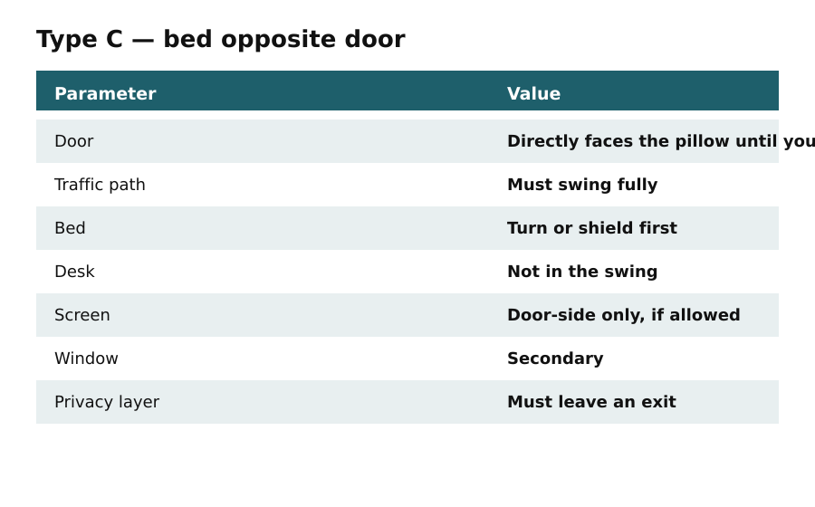
The door is the problem. Screen the line of sight or turn the bed.
Copy the figure for your letter. If Type E, stop after path and light.
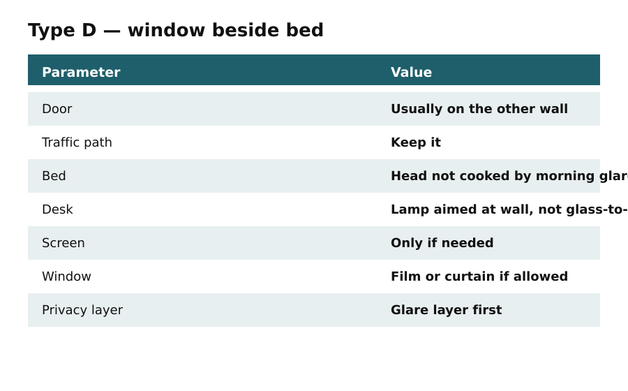
Treat the window as a lamp. Then the door.
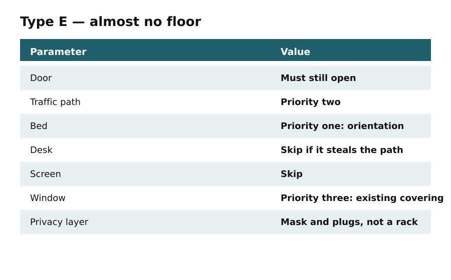
Buy nothing until 1–4 are done.
Day 2 · Choosing Your Budget Tier
Day 2
Choosing Your Budget Tier
In this apartment
Aditi in a Bengaluru PG picks Balanced in rupees only if rods are legal.
Select a budget tier to guide your shopping and layout decisions.
Today's output: Starter, Balanced, or Complete in rupees, mapped to the shopping matrix.
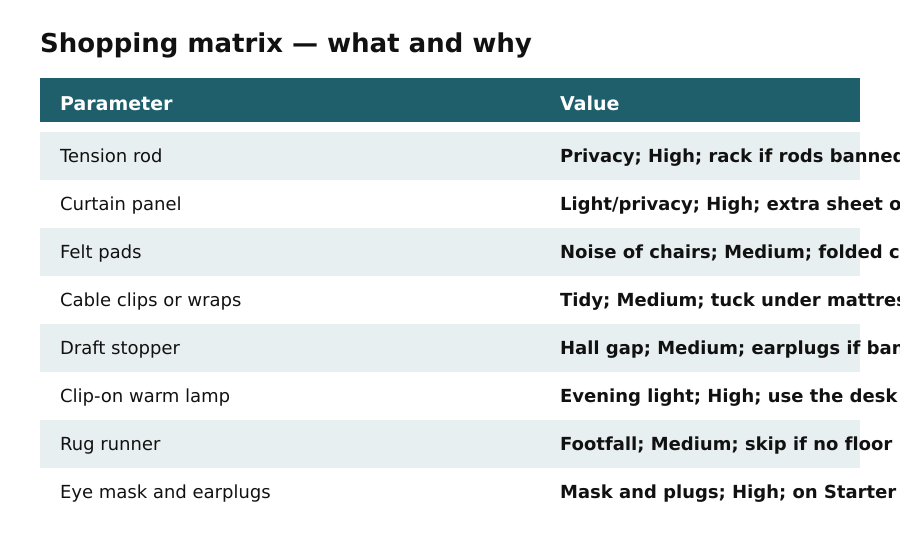
Priority High first. Alternative if the hall says no.
Starter about one thousand rupees. Balanced about three thousand. Complete about seven thousand. Costs are approximate street prices; your city will differ. If housing bans installs, you stay Starter even if you could spend Complete.
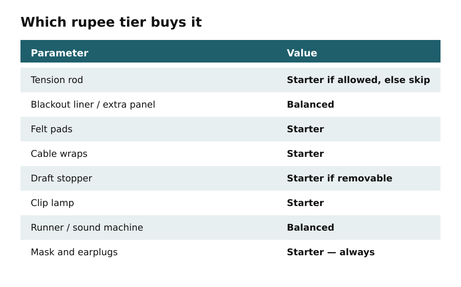
Approximate. Starter first. Complete is still not a studio.
The matrix is the shopping list the title promised. One row per item: purpose, tier, priority, alternative.
Before you move on
Circle your tier
Tick High items only
Skip anything the hall bans
Day 3 · Setting Up Your Space
Day 3
Setting Up Your Space
In this apartment
Vikram in a Mumbai hostel room marks tape, then installs only what the hall allows.
Follow a systematic setup process to ensure a functional and comfortable space.
Today's output: tape on the floor, then only allowed hardware. Warm evening light from a lamp you aim at a wall — color temperature is a preference, not a law.
Measure. Mark Type A–E. Install rods only with permission. Adhesives only if the hall allows, and only after a hidden test. Cable-manage. If zero-mod, stop after tape and furniture slide.
Do not re-teach CALMR. You already have it.
Day 4 · Dorm sanctuary master checklist
Day 4
Dorm sanctuary master checklist
In this apartment
Neha in a Delhi PG runs the master list on night two, not a new apartment subplot.
Conduct final adjustments and tests to ensure your space is comfortable and functional.
Today's output: the master checklist ticked, plus the Day-7 scorecard if you ran the sprint.
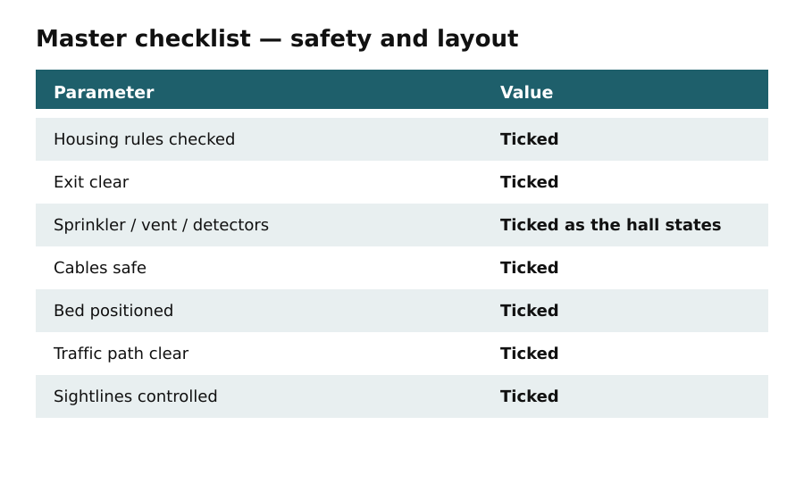
A no on exit beats a yes on décor.
Safety: rules checked; exit clear; sprinkler and vent clear as the hall states; cables safe. Layout: bed positioned; traffic path clear; sightlines controlled. Privacy: screen or curtain only if allowed; airflow preserved. Light: main glare controlled; warm evening lamp; morning light still possible. Noise: main source named; absorption added; masking tested low; agreement or next escalation. Maintenance: daily CALM; weekly reset; monthly review.
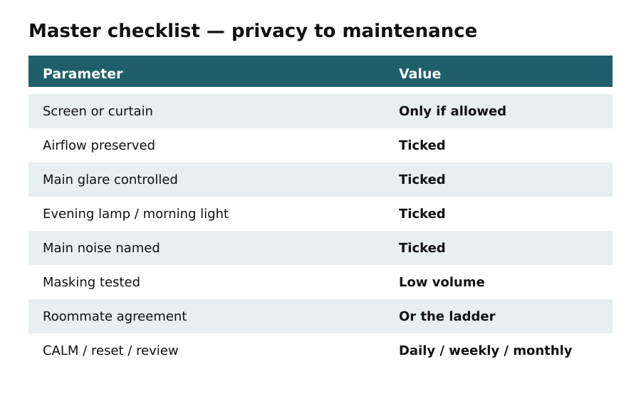
Airflow stays. Fragrance stays off unless agreed.
That is the end of the blueprint. If a box is empty, that is the next hour — not a new product.